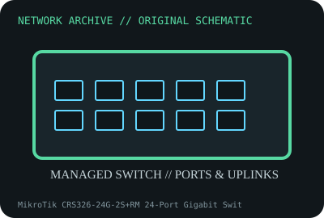

[ MODEL-SPECIFIC NETWORK HARDWARE ]
MikroTik CRS326-24G-2S+RM 24-Port Gigabit Switch
Rackmount 24-port Gigabit switch with two SFP+ uplink slots. Confirm exact product label and revision before applying specifications.

IDENTIFICATION: Confirm manufacturer PID, hardware revision, device ID or module suffix. Nominal standards/link rates are not measurements of payload performance.
Exact specifications and compatibility
| Dedicated subcategory | Managed switches |
|---|---|
| Exact product/model | MikroTik CRS326-24G-2S+RM 24-Port Gigabit Switch |
| Bus, ports and physical interface | Twenty-four 10/100/1000BASE-T RJ-45 ports plus two SFP+ cages; dual redundant AC/DC power connectors per model sheet. |
| PHY, radio or protocol | Marvell switch-chip architecture; RouterOS or SwOS management/switching features and hardware offloads vary by configuration. |
| Nominal rate (not measured) | 24x1GbE plus 2x10GbE nominal port rates; do not equate aggregate port sum with measured forwarding or every feature at line rate. |
| Measured throughput | No measured benchmark is claimed for a physical specimen. A valid result must record host/peer, link partner, media/cable, driver/firmware, traffic pattern, test tool and duration. |
| Drivers, OS and firmware | RouterOS/SwOS software options and firmware; consult MikroTik hardware and RouterOS release notes for offload support. |
| Compatibility | Use compatible SFP+ media and rack airflow. Verify power supply label and RouterOS/SwOS version; hardware offload configuration affects routed features. |
| Variant warning | CRS326-24G-2S+RM differs from CRS326-24S+2Q+RM and CRS328 PoE models; port media, PoE and uplink speeds differ. |
Model and revision notes
CRS326-24G-2S+RM differs from CRS326-24S+2Q+RM and CRS328 PoE models; port media, PoE and uplink speeds differ.
RouterOS/SwOS software options and firmware; consult MikroTik hardware and RouterOS release notes for offload support.
Use compatible SFP+ media and rack airflow. Verify power supply label and RouterOS/SwOS version; hardware offload configuration affects routed features.
Archival, ESD and preservation notes
Record model, serial, firmware, power inputs, SFP modules and rack accessories. Disconnect all supplies before service; protect cages and board from ESD.
Document source URL, access date, document revision and specimen label/condition. Preserve without credentials or private configuration.
Primary manufacturer and standards sources
- MikroTik CRS326-24G-2S+RM product pagePrimary manufacturer or standards documentation; verify exact SKU and host revision.
- MikroTik RouterOS documentationPrimary manufacturer or standards documentation; verify exact SKU and host revision.
- IEEE 802.3 Ethernet standardsPrimary manufacturer or standards documentation; verify exact SKU and host revision.
Manufacturer statements cover the named part or its documented product family; the exact labeled revision and vendor compatibility list take precedence.